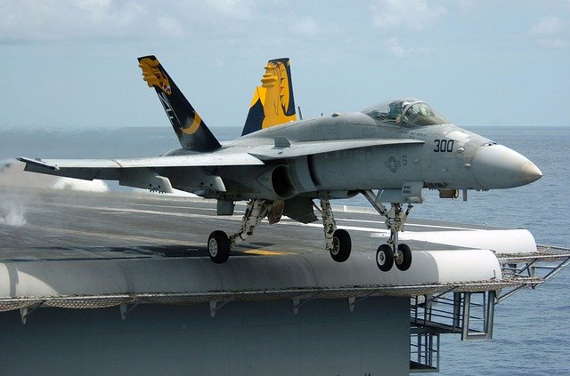

| F-15 イーグル | A-10 サンダーボルトⅡ | F-16 ファイティング・ファルコン | F/A-18E/F スーパーホーネット | F-22 ラプター | F-35 ライトニングⅡ | |
|---|---|---|---|---|---|---|
| 機体画像 | |
 | ||||
| 機体説明 | 1976年に運用が開始され, 高い空対空性能を持ち, 空中戦における被撃墜記録がないとされる. | 1977年に運用が開始され, 高い対地攻撃性能と旋回性能を持ち, 近接航空支援機として運用される. | 1978年に運用が開始され, 低コストで生産性が高く, 装備を変更することで様々な任務に対応できる機体とされる. | 1999年に運用が開始され, F-14の退役後, 空母航空団の主力として活躍, シリアで空戦を行いSu-22を撃墜したとされる. | 2005年に運用が開始され, 世界初のステルス戦闘機であり, 超音速巡行や短距離離着陸も可能で高い機動性を持つ. | 2015年に運用が開始され, 幅広い任務遂行能力と高いステルス性を持つ多用途戦闘機であり, 垂直着陸が出来る型もある. |